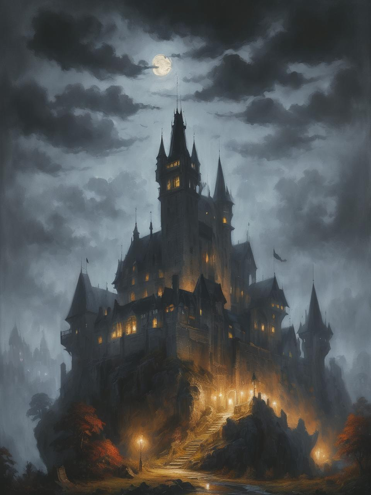
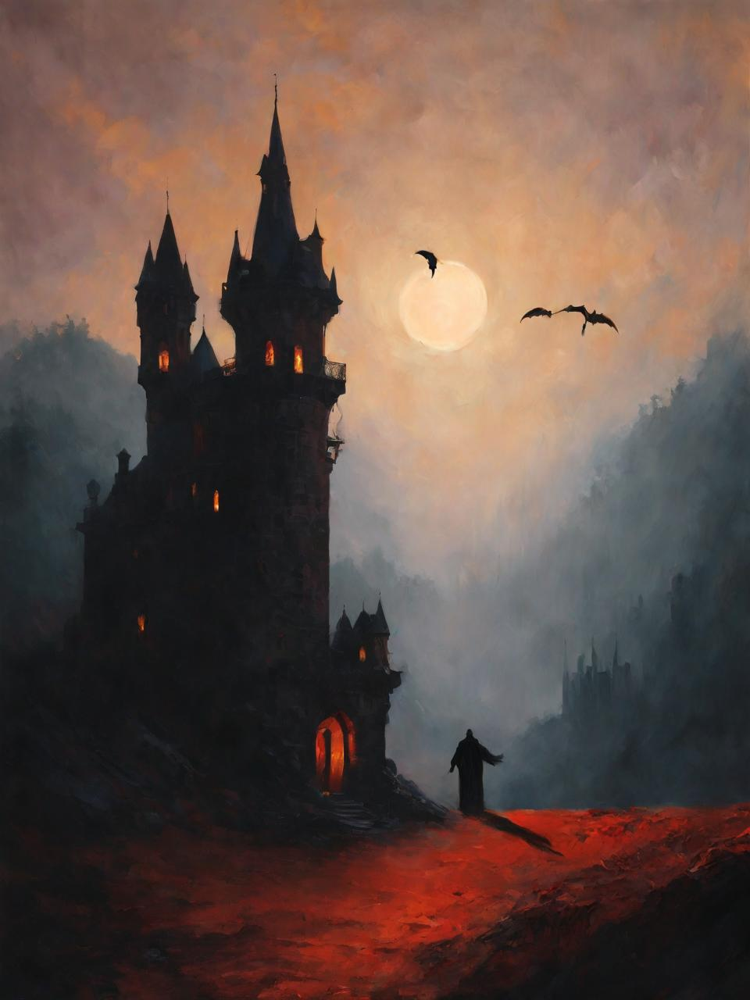

Sayfama hoşgeldin ben Baki
Bu siteyi selcukchain topluluk ödevi için tasarladım, içerisinde yapay zekaya hazırlattığım bana ait fotoğraflar var ve hesap linklerime sayfanın altında ulaşabilirsin.
-
A Dracula, facing away with his long, flowing hair and a dark, (((frightening gaze))) cast down across a sprawling, ((transylvanian castle)), bathed in moonlight against a backdrop of shadowy spires and an oppressive atmosphere that evokes a sense of Gothic mystery
-

Old Dracula leaves an ominous and eerie look on the screen in front of the Transylvanian Castle, As thunder rumbles in the background, Dracula's dark silhouette emerges from the fog, sending shivers down the viewers' spines.
-

A capturing of huge, spooky and eerie dracula silhoute, with intricate details that give off a distinctively ominous glow, blending seamlessly with a (sharply drawn black silhouette) that creates a (subtly haunting atmosphere)